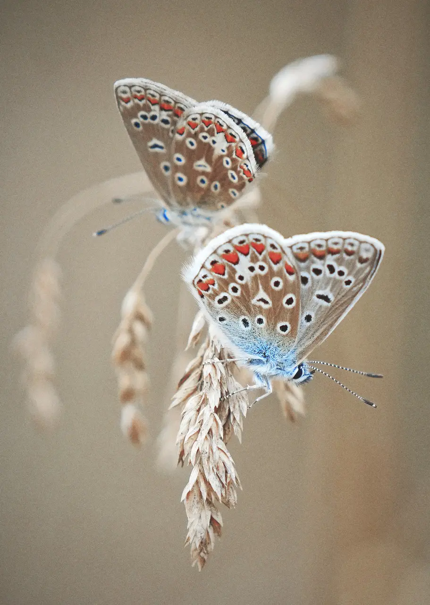

L I V S C Y K L U S
M E T A M O R F O S E
- Æ G
- L A R V E
- P U P P E
- S O M M E R F U G L
En sommerfugl gennemgår 4 stadier i sin levetid: æg, larve, puppe og voksen. Forvandlingen til voksen kaldes fuldstændig forvandling, eller metamorfose, som finder sted i puppen, hvor larvevævet nedbryder og på mirakuløs vis genopbygges til det voksne, smukke insekt, vi møder i naturen. I virkeligheden er dens voksentilværelse kun en parentes i dens liv, idet den som regel kun lever få uger. Indtil da, kan sommerfuglen sammenlagt have tilbragt op til et år eller mere som æg, larve og puppe.
